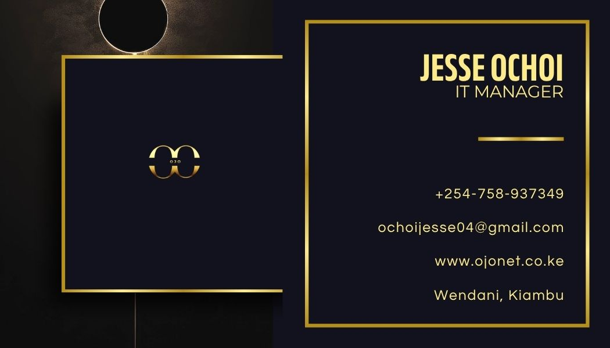

Jesse Ochoi
IT Manager // Systems & Infrastructure // Nairobi, KE
I lead technology operations and infrastructure with a focus on reliability, security, and strategic alignment. From managing complex systems to driving digital transformation - I keep organizations running at their best
VIEW MY WORK GET IN TOUCH
About Me
Experience
IT Manager with 2+ years leading infrastructure, systems, and digital transformation initiatives.
Current Role
IT Manager @ OJO NET - Managing infastructure, security, and business systems.
Education
BSc. Mathematics And Computer Science
Availability
Open to consulting, advisory, and strategic IT leadership roles.
Skills & Services
Infrastructure & Networking
- CISCO
- Firewalls
- VPN
System Administration
- Windows Server
- PowerShell
- Linux
IT Service Management
- Monitoring
- Automation
- Support Systems
Consulting Services
- IT Strategy
- Digital Transformation
- Team Leadership
- Vendor Management
Projects
Network Infastructure Setup
Designed and deployed secure enterprise netork infrastructure with firewall, VPN and monitoring tools.
In ProgressSystem Automation Scripts
Building Powershell and linux scripts to automate IT administrative tasks.
In ProgressPortfolio Website
Developing responsive professional portfolio using HTML and CSS.
In ProgressGet In Touch
Whether you have an IT challenge to solve, a transformation project in mind, or want to explore a consulting engagement - I'd love to connect. Response within 24 hours